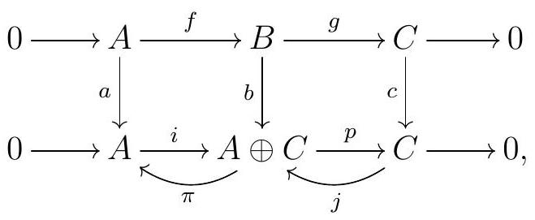

First, we will show that c implies a and b. If the sequence splits, then consider an isomorphism of complexes

meaning that the diagram commutes and \(a, b\text{,}\) and \(c\) are isomorphisms of \(R\)-modules, \(i\) is the inclusion in the first component, and \(p\) is the projection onto the second component. Let \(\pi: A \oplus C \longrightarrow A\) be the projection onto the first component, and \(j: C \longrightarrow A \oplus C\) be the inclusion onto the first component. Now consider the maps \(q:=a^{-1} \pi b\) and \(r:=b^{-1} j c\text{.}\) Then
\begin{equation*}
\begin{array}{rlr}
q f & =a^{-1} \pi b f & \\
& =a^{-1} \pi i a & \text { by commutativity } \\
& =a^{-1} a & \text { because } \pi i=\mathrm{id}_{A} \\
& =1_{A} &
\end{array}
\end{equation*}
and
\begin{equation*}
\begin{aligned}
g r & =g b^{-1} j c & & \\
& =c^{-1}(c g) b^{-1} j c & & \text { multiplying by } c^{-1} c=1_{C} \\
& =c^{-1}(p b) b^{-1} j c & & \text { by commutativity } \\
& =c^{-1} p j c & & \text { because } b b^{-1}=1_{B} \\
& =c^{-1} c & & \text { because } p j=\mathrm{id}_{C} \\
& =1_{C} . & &
\end{aligned}
\end{equation*}
Therefore, c implies a and b.
Now suppose that a holds, and let's show that the sequence splits. First, we need to show that \(B \cong A \oplus C\text{.}\) Every \(b \in B\) can be written as
\begin{equation*}
b=(b-f q(b))+f q(b)
\end{equation*}
where \(f q(b) \in \operatorname{im} f \cong A\text{,}\) and
\begin{equation*}
q(b-f q(b))=q(b)-\underbrace{q f}_{\operatorname{id}_{A}}(q(b))=q(b)-q(b)=0
\end{equation*}
so \(b-f q(b) \in \operatorname{ker} q\text{.}\) This shows that \(B=\operatorname{im} f+\operatorname{ker} q\text{.}\) Moreover, if \(f(a) \in \operatorname{ker} q\text{,}\) then \(a=q f(a)=0\text{,}\) so \(\operatorname{im} f \cap \operatorname{ker} q=0\text{,}\) and \(B=\operatorname{im} f \oplus \operatorname{ker} q\text{.}\) Now when we restrict \(g\) to \(\operatorname{ker} q, g\) becomes injective. We claim it is also surjective, and thus an isomorphism. Indeed, for any \(c \in C\) we can pick \(b \in B\) such that \(g(b)=c\text{,}\) since \(g\) is surjective, and we showed that we can write \(b=f(a)+k\) for some \(k \in \operatorname{ker} q\text{.}\) Then
\begin{equation*}
g(k)=\underbrace{g f}_{0}(a)+g(k)=g(b)=c.
\end{equation*}
Finally, note that \(\operatorname{im} f \cong A\text{,}\) so we conclude that \(B \cong A \oplus C\text{,}\) via the isomorphism \(\varphi\) given by
\begin{equation*}
\begin{aligned}
& B \longrightarrow \operatorname{im} f \oplus \operatorname{ker} q \longrightarrow A \oplus C \\
& b \longmapsto(f q(b), b-f q(b)) \longmapsto(q(b), g(b)) .
\end{aligned}
\end{equation*}
Since \(g f=0\) and \(q f=\operatorname{id}_{A}, \varphi f(a)=(q f(a), 0)=(a, 0)\text{,}\) so \(\varphi f=i\text{,}\) where \(i: A \longrightarrow A \oplus C\) is the inclusion on the first factor. If \(p: A \oplus C \longrightarrow C\) denotes the projection onto the second factor, \(p \varphi=g\text{.}\) Together, these two facts say that the following is a map of complexes:

Since \(\varphi\) is an isomorphism, so is our map of complexes, and thus our original sequence is a split exact sequence. This shows that a implies \(c\text{.}\)
Now assume b holds. Every \(b \in B\) can be written as
\begin{equation*}
b=(b-r g(b))+r g(b)
\end{equation*}
where \(r g(b) \in \operatorname{im} r\) and
\begin{equation*}
g(b-r g(b))=g(b)-\underbrace{g r}_{\mathrm{id}_{C}}(g(b))=g(b)-g(b)=0
\end{equation*}
so \(b-r g(b) \in \operatorname{ker} g\text{.}\) This shows that \(B=\operatorname{ker} g+\operatorname{im} r\text{.}\) Moreover, if \(r(c) \in \operatorname{ker} g\text{,}\) then
\begin{equation*}
c=\operatorname{id}_{C}(c)=g r(c)=0
\end{equation*}
Therefore, \(B=\operatorname{ker} g \oplus \operatorname{im} r\text{.}\) Now \(r\) is injective, since \(r(c)=0 \Longrightarrow c=g r(c)=0\text{,}\) and thus \(\operatorname{im} r \cong C\text{.}\) Since \(\operatorname{ker} g=\operatorname{im} f \cong A\text{,}\) we conclude that \(B \cong A \oplus C\text{,}\) via the isomorphism
\begin{equation*}
\begin{aligned}
& A \oplus C \stackrel{\psi}{\longrightarrow} B \\
& (a, c) \longmapsto f(a)+r(c) .
\end{aligned}
\end{equation*}
Finally, let \(i: A \longrightarrow A \oplus C\) denote the inclusion of the first factor, and \(p: A \oplus C \longrightarrow C\) denote the projection onto the second factor. By construction, \(\psi i=f\text{.}\) Moreover,
\begin{equation*}
g \psi(a, c)=\underbrace{g f}_{0}(a)+\underbrace{g r}_{\mathrm{id}_{C}}(c)=c
\end{equation*}
so \(g \psi=p\text{.}\) Together, these say that the diagram

commutes, and must then be an isomorphism of short exact sequences.